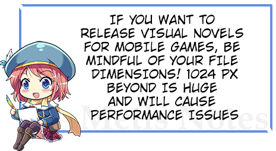
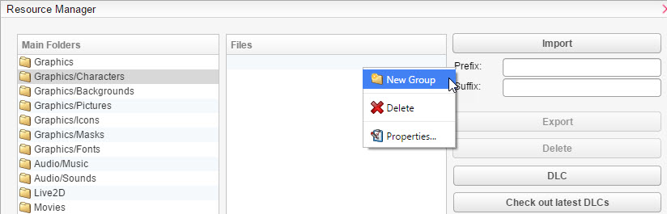
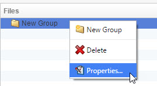
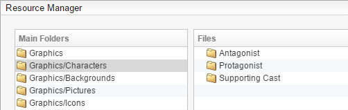
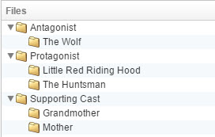
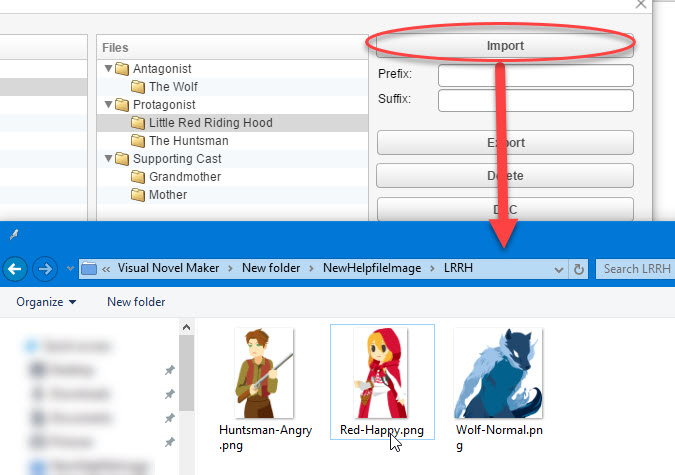
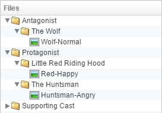
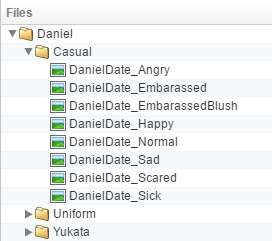

（Resource Manager）
导入我们的素材（资源）。 记住！你必须使用资源管理器导入素材。 仅仅将文件复制到你的项目文件夹是无法加载的。 我强烈推荐你在导入资源和阅读本文之前阅读以下内容：
（（（）资源标准如果你有太多的角色表情，我们强烈建议你也阅读本教程： 表情导入器
表情导入器
单击你计划导入的资源类型的正确文件夹。在本示例中，我们将使用“角色”文件夹。我强烈建议根据它们在游戏中的作用来创建文件夹。让我们参考

作为基础。 只需按
- 右键单击 ->新建组。要重命名文件夹，请右键单击
- 新建组并按属性。
 只需继续创建
只需继续创建

- 新建组，直到你得到类似这样的结果。根据游戏的不同，你可能拥有多个主角等。 因此，最好这样排序。
 单击一个新建组
单击一个新建组

- ，然后在其中创建另一个新建组。这次使用你角色的名字。它看起来会是这样的：

单击一个角色文件夹，例如“小红帽”，然后按
- 导入。选择一个角色，然后按 OK。 如果成功，文件夹应该看起来像这样： 恭喜！ 你的资源已成功导入。 注意：

- 如果你发现自己有多个角色基础，StAr 资源有一些关于如何格式化你的资源的示例，以区分它们！ 像这样： HTML

游戏内 UI
- 游戏内 UI

- 注意：
本主题不会解释如何制作你自己的游戏内 UI 或如何修改现有 UI。 如果你在寻找教程，请查看
IGUI 入门
